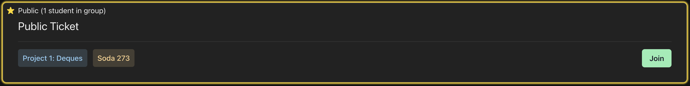

Online OH Guide
How will online office hours function in 61b?
Office hours will be provided both in-person and online. We will be using Zoom to host online office hours. All office hours start on Berkeley time.
The office hours schedule can be found on the calendar page.
Joining the Online OH Zoom
You can find the link to online office hours on the bottom of the course website with the calendar of office hours. They are in pink - simply click on the box and you will be redirected to the online zoom.
Note that you must be signed into your Berkeley zoom account in order to access online office hours. You can do this by selecting “sign in with SSO” and typing “berkeley”, which will take you to the CalNet authentication page.
Office Hours Policies
Office Hours will be one of the main resources you use for help. We have very particular policies for assisting students in office hours, so we can get to as many students as possible. It is very important that you follow all these guidelines exactly, otherwise you will always be skipped when trying to get help. These policies are repeated here and on the Office Hours Queue.
As soon as you join the Zoom meeting, you will enter the main session, and will see many breakout rooms open. Simply select any of the open breakout rooms and join it. Once you’re in, you can place a ticket on the queue - make sure to specify your breakout room number in the location!
To get help in Office Hours this semester:
- Create a ticket on the Office Hours Queue, and specify what room you are in (Zoom or physical).
- Select whether your question is conceptual or debugging (staff will need to look at your code). If your question is conceptual, check if there is a similar, existing public ticket that you can join!
- The Office Hours Queue will notify you once a TA or an academic intern grabs your ticket off the queue. Note that they can typically only spend about 10 minutes with you, unless it’s a setup issue. If this time is not enough, you can always get on the queue again.
- We will rarely give help with extra credit in Office Hours. We may decide to help you if no other student is seeking help with regular assignments.
Simple Office Hours Queue
We use an office hours website built by one of the members of our course staff, Meshan Khosla. The main features for creating a ticket and receiving help are identical to the above, but we will describe how to sign in and additional features below.
This office hours queue is still actively being developed. If you have issues or suggestions, please let a member of course staff know or create a post on Ed!
Signing In
To sign in, click the button in the top right after opening the website. Note: you must use your @berkeley.edu email!
Public Tickets
The new office hours queue supports public tickets for conceptual questions. Public tickets allow multiple students to join the same ticket and receive help together.
Course staff will not look at your code during public tickets. For debugging and code-related help, create a private ticket instead.
On the queue, public tickets will be highlighted in yellow and denoted with a star. If a public ticket’s title and description is similar to your question, join the ticket and find the other students in the group. Group tickets will be helped for longer to account for the larger number of students per ticket.
